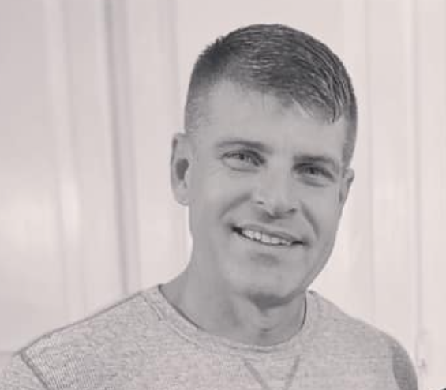

About Me
Hello there! My name is Christopher Dunsford. I am an Application Development Manager, Freelance Consultant, and avid Computer Programmer
Application Development Manager
I manage a team of developers at Brandt Infomation Systems in Tallahassee, FL. This includes conducting performance reviews, coaching, running scrum meetings, and more. Prior to taking on this position, I was a Program Manager at OpenText Corporation, headquartered out of Canada. In this role I managed a new third party support program. In this role, I was responsible not only for managing the program and liasing with marketing, sales, and the Executive Leadership Team, but also keeping developers and support analysts on task. Prior to this role, I held the title of Senior Manager of Customer Support at OpenText. In this role, I was responsible for managing both local and virtual teams including teams in Tallahassee, Candada, and India. Prior to the management roles identified above, I held a number of individual contributer roles including Senior Product Specialist, Senior Software Engineer, and Customer Support Analyst.
Freelance Consultant
I love working with others on their ideas and dreams. When a client comes to me and asks me to help them get their project off the ground with a new website or software solution, I am eager to get started and show them the possibilities. I work with each client through requirements gathering, project charter creation, project exectution, and ultimately project completion. I am not satisfied until my customer is satisfied. Talk to me about what I can do for you.